Capitolo 23 Com’è Realizzato il Libro
Per scrivere queste pagine mi sono avvalso di diverse tecnologie che grazie all’ambiente integrato R-Studio (cita) è possibile combinare insieme con uno sforzo relativamente basso. Tra i tanti software coinvolti ricordo
- R [1]
- R Markdown [2], [3], [4]
R è l’ambiente di calcolo col quale ho svolto tutti i calcoli e realizzato le figure. R Markdown è un software che consente di mescolare pezzi di codici HTML, pezzi di codici \(\rm\LaTeX\) e pezzi di codice R. In sostanza lo stesso documento contiene:
- il contenuto del testo;
- i codici per produrre i calcoli e i grafici;
- i codici che consentono la formattazione del testo
per esempio il codice
```{r 24-Libro-2,, echo=FALSE}
# Questo è un blocco di codice in R
# fisso alcuni parametri ed eseguo alcuni conti
n <- 250 # fisso n = 250
data <- rnorm(n,10,1) # genero n dati da una normale di di media 10 e sd 1
mx <- mean(data) # chiamo mx la media dei dati
vx <- var(data) # chiamo vx la varianza dei dati
```
Abbiamo analizzato $n=`r n`$ individui, abbiamo osservato una media pari
a $\bar x =`r mx`$ e una varianza pari a $\sigma^2=`r vx`$
```{r 24-Libro-3,, echo=FALSE}
# qui produco un grafico
hist(data)
```produrrà il seguente risultato
Abbiamo analizzato \(n=250\) individui, abbiamo osservato una media pari a \(\bar x =9.982\) e una varianza pari a \(\sigma^2=0.9465\). 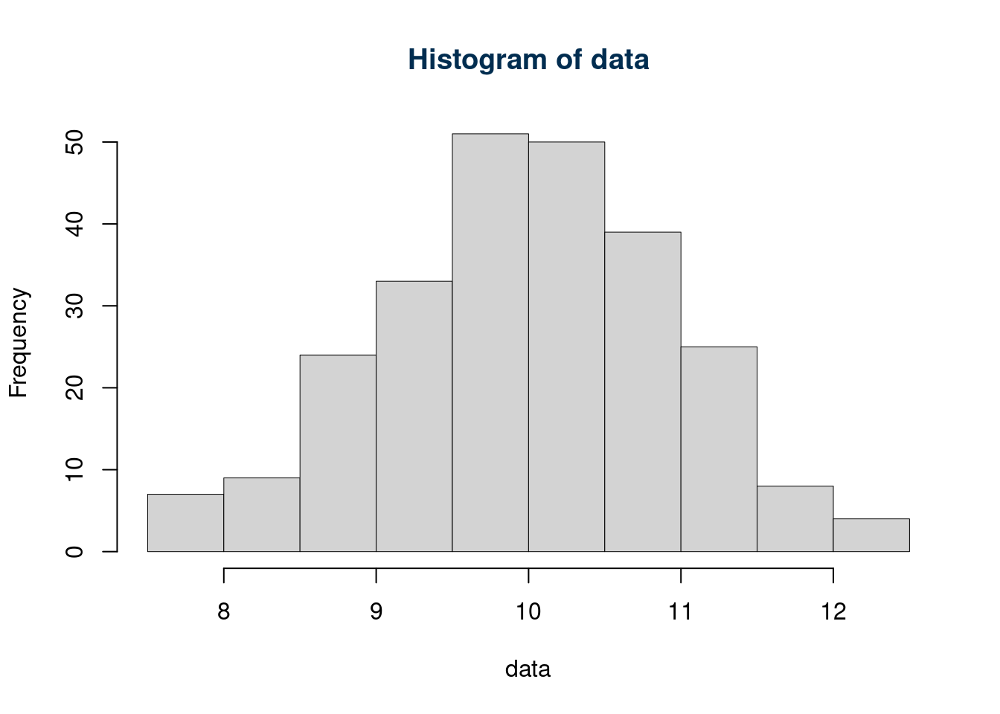
Quindi cioè che viene prodotto all’interno dei blocchi di R (chiamati R chunks),
è utilizzabile nel testo richiamando `r nome_comando`
il testo finale restituirà il risultato di nome_comando.
Le espressioni scritte tra $ sono pezzi di codice che è un potentissimo
software di video scrittura, particolarmente adatto per scrivere formule matematiche.
Per esempio il codice
produce
\[ \bar x = \frac 1n \sum_{i=1}^n x_i \]
L’obiettivo delle seguenti pagine è documentare la realizzazione del libro e non quello di approfondire passo, passo i software utilizzati. Farò solo una breve presentazione per stimolare i lettori più curiosi a cercare documentazioni più approfondite dei principali ambienti che ho utilizzato.
23.1 R: A Language and Environment for Statistical Computing
L’ambiente open source R è una collezione software per analizzare, manipolare e rappresentare dati. È sviluppato per tantissimi sistemi operativi tra cui Windows, Linux, Mac OS e tanti altri. Per maggiori informazioni su download e installazione rimando al sito. [https://www.R-project.org/][https://www.R-project.org/] nel quale si trovano diversi documenti di introduzione al software non solo inglese:
R è un interprete interattivo, l’utente scrive un comando e una volta premuto invio R restituisce il risultato.
23.1.1 R come calcolatrice
R è anzitutto una calcolatrice
## [1] 2## [1] -1## [1] 12## [1] 1.3333## [1] 25## [1] 0.69315## [1] 2.7183## [1] 3.1416## [1] Inf23.1.2 Operatori Speciali
Alcuni caratteri speciali sono
NANot Available è dedicato ai dati mancantiInfinfinitoNULLnon presente, nulloTRUEoTveroFALSEoFfalso
## [1] NA## [1] Inf## numeric(0)## [1] 2## [1] 1a==ba è uguale a b?a!=ba è diverso a b?a>ba è maggiore di b?
## [1] FALSE## [1] TRUE## [1] FALSEGli operatori & e | svolgono il ruolo di and e or.
## [1] FALSE## [1] TRUE23.1.3 Vettori e matrici
Con il comando c è possibile concatenare dei valori per creare un vettore, mentre
si possono assegnare etichette agli oggetti con l’operatore <-
## [1] 2 1 9## [1] 2.3 1.4 2.8## [1] 4.3 2.4 11.8Alcune funzioni speciali aiutano a velocizzare la creazione di vettori, per
esempio 1:10 produce i numeri che vanno da uno a dieci.
## [1] 1 2 3 4 5 6 7 8 9 10Alternativamente la funzione seq produce una sequenza di numeri dal minimo al massimo
secondo alcuni criteri
s1 <- seq(0,1,by=.1) # sequenza da 0 ad 1 di passo 0.1
s2 <- seq(0,1,length=6) # sequenza da 0 ad 1 di 6 numeri
s1## [1] 0.0 0.1 0.2 0.3 0.4 0.5 0.6 0.7 0.8 0.9 1.0## [1] 0.0 0.2 0.4 0.6 0.8 1.0La lunghezza di un vettore si ricava col comando lenght
## [1] 6Per estrarre elementi da un vettore usiamo le parentesi quadre: s2[2] restituisce il secondo elemento di s2 mentre s2[1:4] restituisce i primi 4 elementi e s2[c(3,2,5)]
il terzo, il secondo e il quinto
## [1] 0.2## [1] 0.0 0.2 0.4 0.6## [1] 0.4 0.2 0.8## [1] TRUE FALSE TRUE TRUE FALSE FALSE TRUE## [1] 1 3 4 7## [1] 1.1 4.2 5.1 2.5## [1] -3.4 -4.4 -3.9È possibile costruire matrici con la funzione matrix
## [,1] [,2]
## [1,] 1 3
## [2,] 2 4## [,1] [,2]
## [1,] 1 2
## [2,] 3 4## [,1] [,2]
## [1,] 2 5
## [2,] 5 8Le funzioni cbind ed rdbind consentono di unire una nuova colonna o una nuova riga
ad una matrice o vettore.
## x1 x2
## [1,] 1 2
## [2,] 2 3
## [3,] 3 4## [,1] [,2] [,3]
## x1 1 2 3
## x2 2 3 4Per indicizzare una matrice useremo sempre le parentesi quadre ma con 2 indici
## [,1] [,2] [,3] [,4]
## [1,] 1 6 11 16
## [2,] 2 7 12 17
## [3,] 3 8 13 18
## [4,] 4 9 14 19
## [5,] 5 10 15 20## [1] 1## [,1] [,2]
## [1,] 12 17
## [2,] 13 18I vettori e le matrici non sono solo numeriche ma possono anche contenere caratteri, ovviamente le operazioni aritmetiche non sono più consentite
## [,1] [,2]
## [1,] "testo 1" "testo 3"
## [2,] "testo 2" "testo 4"23.1.4 Liste e dataframe
Una lista è una collezione di diversi oggetti di R
mat1 <- matrix(c(1,2,3,4),nrow = 2) # legge in colonna
mat <- matrix(c("testo 1","testo 2","testo 3","testo 4"),nrow = 2)
b <- c(NA,NA,NA)
lista <- list(mat1,mat,b)
lista## [[1]]
## [,1] [,2]
## [1,] 1 3
## [2,] 2 4
##
## [[2]]
## [,1] [,2]
## [1,] "testo 1" "testo 3"
## [2,] "testo 2" "testo 4"
##
## [[3]]
## [1] NA NA NAUna particolare tipo di lista è il data.frame che consente di creare una matrice dei
dati composta da colonne di diversa natura
sesso <- c("M","M","M","F","F")
eta <- c(32.2,45.6,65.3,34.1,43.2)
dati <- data.frame(sesso,eta)
dati## sesso eta
## 1 M 32.2
## 2 M 45.6
## 3 M 65.3
## 4 F 34.1
## 5 F 43.2il simbolo del $ aiuta a selezionare le colonne di interesse
## [1] "M" "M" "M" "F" "F"## [1] 32.2 45.6 65.3 34.1 43.223.1.5 Classi e Oggetti
R è un linguaggio funzionale, ogni elemento è un oggetto che ha un classe e metodi. Per esempio
## [1] "numeric"## [1] "matrix" "array"## [1] "list"23.1.6 I grafici
La libraria grafica di R è particolarmente ricca. La funzione di base per
realizzare un grafico è la funzione plot(x,y). La funzione, di default, disegna
i punti di coordinate x e y.
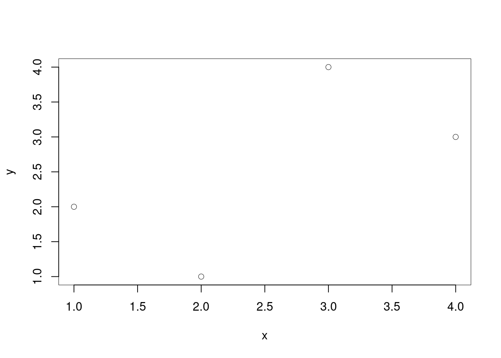
La funzione plot è molto flessibile e può essere arricchita con molte opzioni
x <- c(1,2,3,4)
y <- c(1.9,1.2,3.5,3.1)
plot(x,y,
axes=F, # non disegnare gli assi lo farò dopo
pch = 16, # codice 16, per il pallino chiuso
col = ared, #colore rosso per i pallini
xlab="Etichetta per la x",
ylab="Etichetta per la y",
type = "b", # linea e punto
lty =2, # stile di tratteggiatura
main = "Titolo del grafico"
)
# Un volta creato il grafico di base possiamo aggiungere
axis(1) # asse delle x
axis(2,at = y) # asse delle y sui punti osservati
text(2,3,"Nelle coordinate x=1.5 e y=3 scrivo qualcosa")
text(3,1.9,"Scrivo più grande se cex = 1.5",cex=1.5)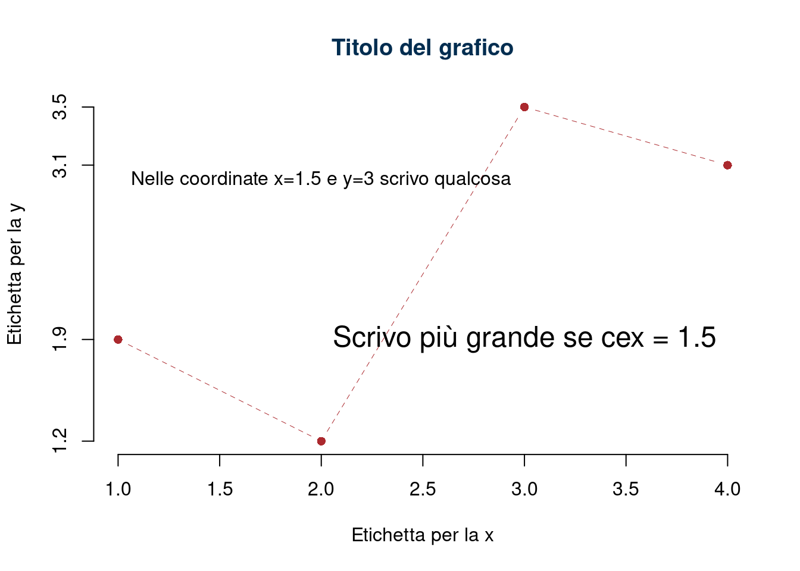
Con le funzioni points e lines è possibile aggiungere al grafico esistente
punti e linee, rispettivamente. Mentre per disegnare funzioni la funzione curves
aiuta molto
curve(sin(x),from = -pi,to = pi,axes=F) # disegna sin(x) tra - pi e + pi
curve(cos(x),col=ared,add=T) # aggiunge il grafico di cos(x) in rosso
points((-3):3,cos((-3):3),pch=3)
lines((-3):3,cos((-3):3),col=iblue,lty=4)
axis(1)
axis(2)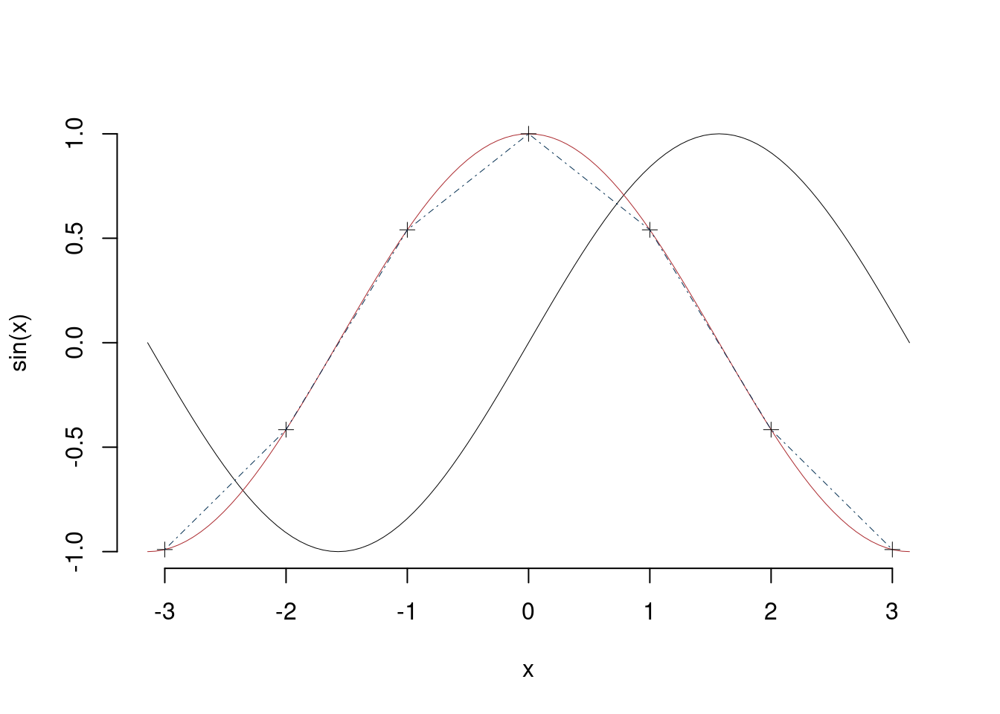
Un’altra funzione di interesse è hist che produce istogrammi di densità
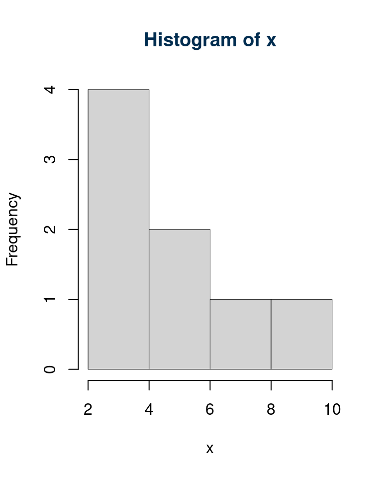
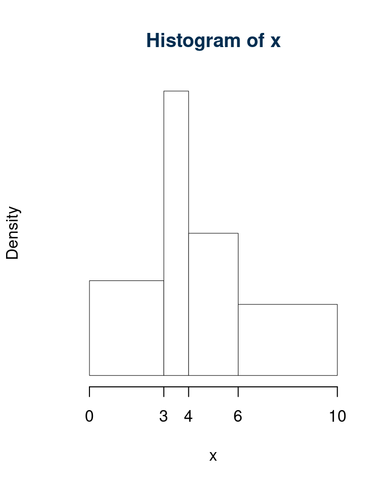
Per rappresentare dati in 3D la funzione persp disegna superfici in 3 dimensioni
x <- seq(-4,4,by=.1)
y <- seq(-4,4,by=.1)
z <- outer(x,y,function(x,y)exp(-x^2-y^2))
persp(x,y,z,theta = 25,phi = 25,ltheta = 25,border = NA,shade = 2.5)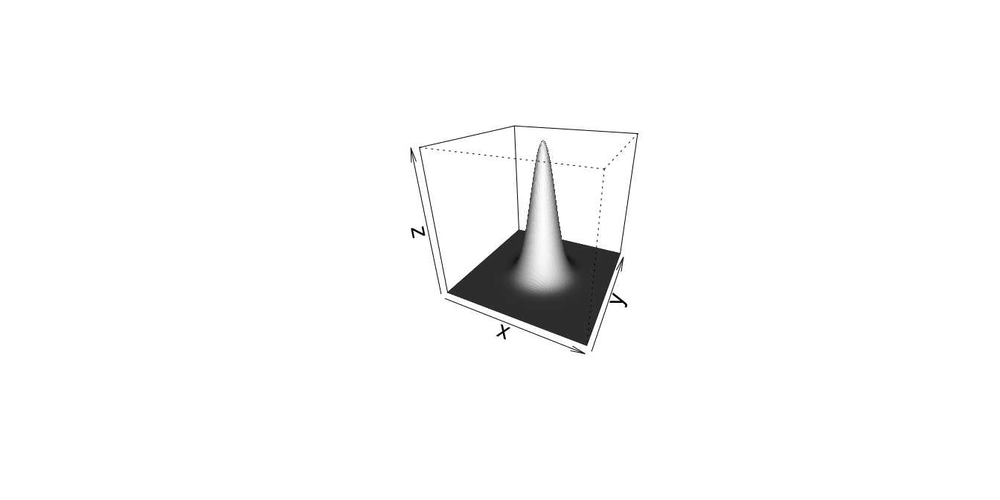
Altre funzioni grafiche interessanti sono rect e polyogn
che aggiungo ai grafici rettangoli e poligoni, rispettivamente
plot(c(0,10),c(0,10),xlab = "", ylab="",axes=F,type="n") # inizia un grafico vuoto
rect(xleft = 1,ybottom = 2,xright = 5,ytop = 4)
rect(xleft = 2,ybottom = 3,xright = 6,ytop = 9,density = 20,col=iblue)
rect(xleft = .5,ybottom = 3.5,xright = 3.5,ytop = 4.5,col=ared)
polygon(x = c(6,6.5,7,10),y = c(1,7,5,6),density = 10,
col="darkorange",angle = -45,border = "gray39",lwd=4)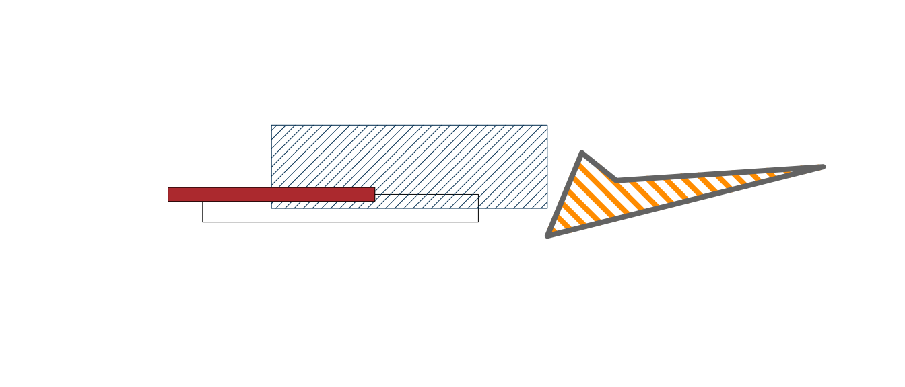
Le proporzioni tra x ed y si possono forzare con l’opzione asp
plot(0:10,0:10,xlab = "", ylab="",axes=F) # asp non specificato
axis(1,pos = 0)
axis(2,pos = 0,las=2)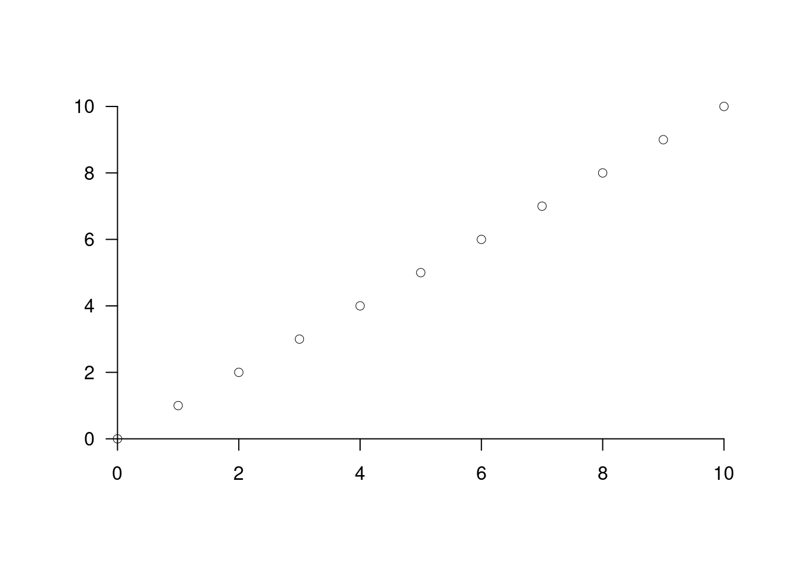
plot(0:10,0:10,xlab = "", ylab="",axes=F,asp=1) # asp=1
axis(1,pos = 0,at = seq(0,10,by=2))
axis(2,pos = 0,las=2)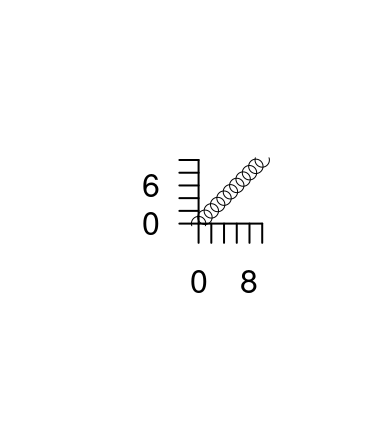
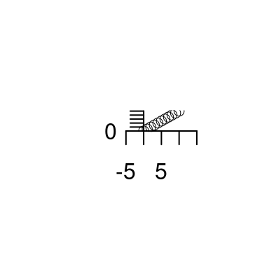
plot(0:10,0:10,xlab = "", ylab="",axes=F,asp=4/3) # asp=4/3
axis(1,pos = 0)
axis(2,pos = 0,las=2,at = seq(0,10,by=2))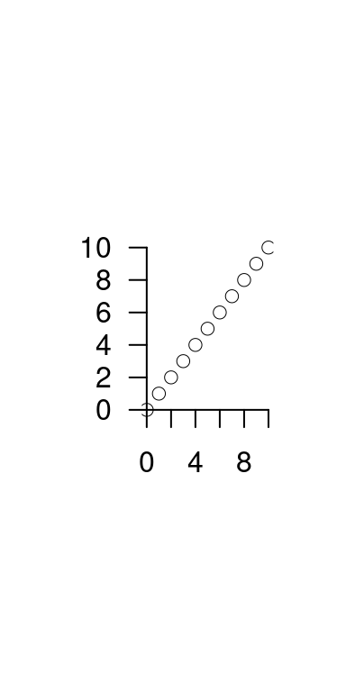
I parametri del grafico si possono settare attraverso par
set.seed(1)
par(mfrow=c(1,2),cex=0.6) # 1 riga e 2 colonne
dati <- rnorm(100) # 100 dati dalla normale
plot(
sort(dati),(1:100)/100,xlab = "x", ylab="F(x)",axes=F,type="l"
) # FdR empirica
axis(1)
axis(2)
hist(
dati,c(-4,-3,-1.5,-.5,0,.5,1.5,3,4),main="Istogramma di densità",col="white"
) # istogramma dei dati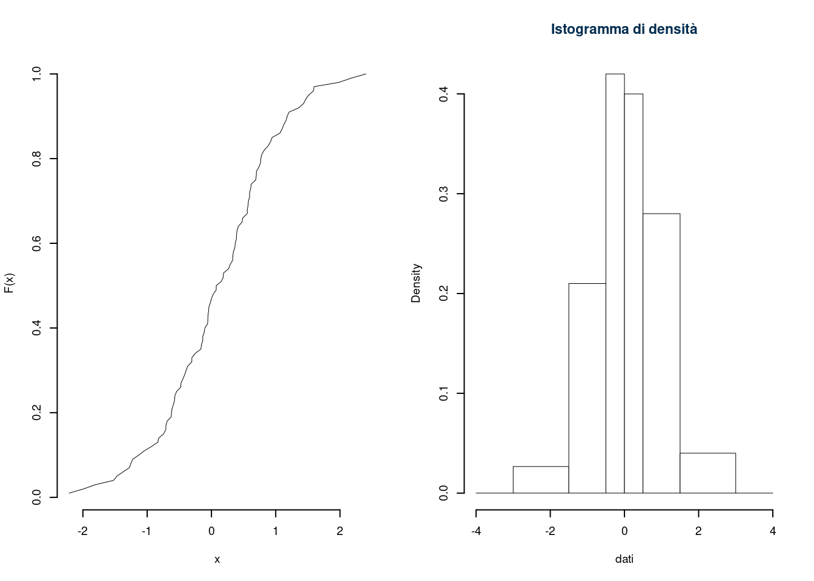
23.1.7 Le Funzioni in R
Essendo R un linguaggio funzionale ogni funzione (che è essa stessa un oggetto)
si alimenta di uno o più oggetti di determinate classi e restituisce uno o
più oggetti di una determina classe. Per esempio abbiamo visto come la funzione
matrix abbia come input un vettore e come output una matrice.
## [1] "integer"## [1] "matrix" "array"Le funzioni di R hanno argomenti con etichette, se gli argomenti rispettano l’ordine
delle etichette non c’è bisogno di chiamarli altrimenti vanno etichettati anche loro.
Per esempio la funzione matrix si aspetta almeno due argomenti i dati data
e il numero di righe nrow o il numero di colonne ncol
## [,1] [,2] [,3] [,4] [,5]
## [1,] 1 3 5 7 9
## [2,] 2 4 6 8 10## [,1] [,2] [,3] [,4] [,5]
## [1,] 1 3 5 7 9
## [2,] 2 4 6 8 10## [,1] [,2]
## [1,] 1 6
## [2,] 2 7
## [3,] 3 8
## [4,] 4 9
## [5,] 5 10## [,1]
## [1,] 223.1.7.1 Le funzioni statistiche
Tra le funzioni di base ricordiamo mean(x) la media del vettore x
var(x) la varianza corretta, sd(x) la SD corretta , median(x) la mediana
e quantile(x,p) il percentile di ordine \(p\). Per esempio
## [1] 4.825## [1] 7.5621## [1] 2.7499## 25% 50% 75%
## 2.45 4.15 6.75Per trattare le variabili doppie nella regressione ci sono strumenti appositi,
le funzioni cov(x,y) e cor(x,y) calcolano la correlazione e la covarianza tra i vettori
x ed y
x <- c(2.3,4.5,6.7,2.1,3.8,2.5,6.9,9.8)
y <- c(2.4,2.1,5.6,7.2,6.5,7.1,4.3,9.7)
cov(x,y) # covarianza## [1] 2.5925## [1] 0.36535## [1] 0.13348La funzione lsfit (Least Squared Fit => Stima dei Minimi Quadrati) consente
di calcolare \(\hat\beta_0\) e \(\hat\beta_1\) rapidamente
x <- c(1,2,3,4)
y <- c(1.9,1.2,3.5,3.1)
modello <- lsfit(x,y)
modello$coefficients # coefficienti beta 0 e beta 1## Intercept X
## 0.95 0.59## [1] 0.36 -0.93 0.78 -0.21plot(x,y,
axes=F, # non disegnare gli assi lo farò dopo
pch = 16, # codice 16, per il pallino chiuso
col = ared, #colore rosso per i pallini
xlab="Reddito",
ylab="Consumo",
lty =2, # stile di tratteggiatura
main = "Relazione tra Reddito e Conumo"
)
# Un volta creato il grafico di base possiamo aggiungere
axis(1) # asse delle x
axis(2) # asse delle y
# e aggiungere una retta di coefficienti beta 0 e beta 1
abline(modello$coefficients,lwd=2,col=iblue) 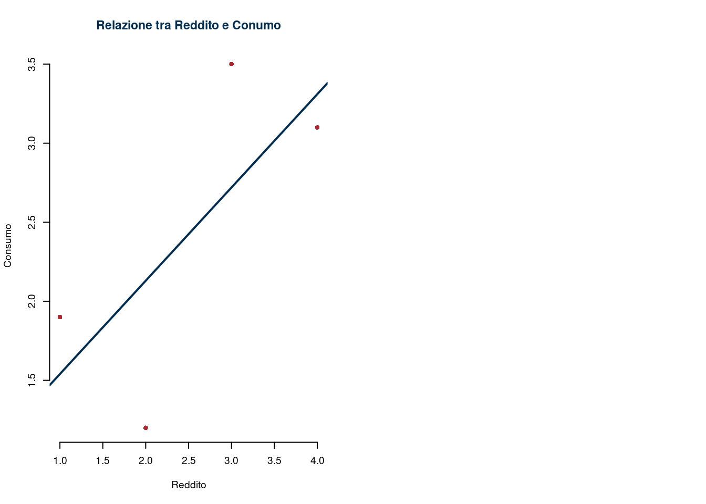
23.1.7.2 Le VC di maggiore interessa
In R sono tabulate tutte le distribuzioni di maggiore interesse, comprese, la binomiale, la Poisson,
la Normale, la t di studente e il chi quadro, insieme a moltissime altre. La sintassi
è relativamente semplice il prefisso d indica la funzione di densità o di probabilità
il prefisso p indica la funzione di ripartizione, il prefisso q indica
l’inverso della funzione di ripartizione e il prefisso r genera numeri casuali
da quella distribuzione.
Per esempio se \(X\sim\text{Binom}(n=5;\pi=0.3)\)
[1] 0.1323
[1] 0.16807 0.36015 0.30870 0.13230 0.02835 0.00243
plot(0:5,dbinom(x = 0:5,size = 5,prob = 0.3),type="h",lwd=2) # grafico
pbinom(q = 3,size = 5,prob = 0.3) # è la probabilità che X≤3[1] 0.96922
[1] 2
[1] 1 1 1 1 1 1 2 0 1 2 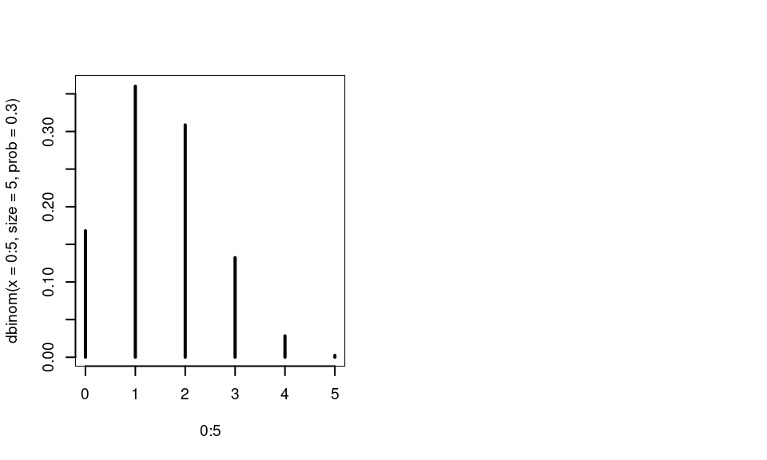
Per esempio se \(X\sim\text{Pois}(\lambda=4.3)\)
[1] 0.1798
[1] 0.0135686 0.0583448 0.1254413 0.1797992 0.1932842 0.1662244 0.1191275 [8] 0.0731783 0.0393333 0.0187926 0.0080808
plot(0:10,dpois(x = 0:10,lambda = 4.3),type="h",lwd=2) # grafico
ppois(q = 3,lambda = 4.3) # è la probabilità che X≤3[1] 0.37715
[1] 6
[1] 8 2 6 8 6 3 5 8 8 3 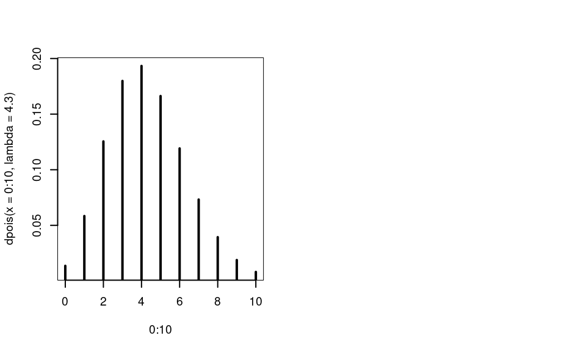
Per esempio se \(X\sim N(\mu=2.5,\sigma^2=(1.5)^2)\)
par(mfrow=c(1,2),cex=0.6) # metto una figura accanto all'altra
curve(dnorm(x,mean = 2.5,sd = 1.5),
from = 2.5-4*1.5,
to = 2.5+4*1.5,
axes=F,
ylab = expression(f(theta)),
xlab = expression(theta))
axis(1,c(2.5-2*1.5,2.5-1.5,2.5,2.5+1.5,2.5+2*1.5))
segments(x0 = c(2.5-1.5,2.5+1.5),
y0 = 0,
x1 = c(2.5-1.5,2.5+1.5),
y1 = dnorm(c(2.5-1.5,2.5+1.5),2.5,1.5),
lty = 2)
curve(pnorm(x,mean = 2.5,sd = 1.5),
from = 2.5-4*1.5,
to = 2.5+4*1.5,
axes=F,
ylab = expression(F(theta)),
xlab = expression(theta))
axis(1)
axis(2)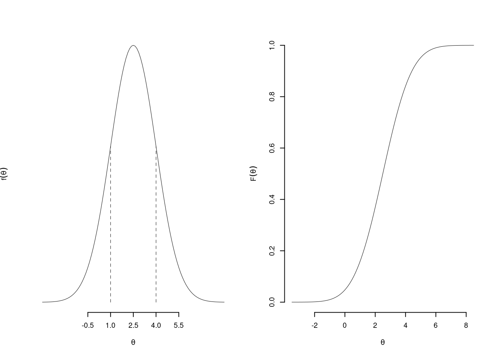
## [1] 0.63056## [1] 0.36944## [1] 0.53935## [1] 1.54640 1.80753 4.64842 1.52396 2.18893 1.91079 2.02001 2.08133 3.24128
## [10] 2.23400 1.74106 4.51456 2.17813 2.23067 2.34971 3.56900 2.38965 2.44355
## [19] 1.47751 2.01359 2.59024 1.61666 3.29724 0.22241 2.9598423.1.7.3 Funzioni tra stringhe
Una stringa è un vettore di testo, non numerico, la funzione paste consente
di incollare testi.
vettore_testo1 <- c("mela","pera","pesca","banana")
vettore_testo2 <- c("rossa","verde","gialla","gialla")
paste(vettore_testo1,vettore_testo2,sep=" è ")## [1] "mela è rossa" "pera è verde" "pesca è gialla" "banana è gialla"## [1] "la mela è rossa e la pera è verde e la pesca è gialla e la banana è gialla"## [1] 8.46 9.70 9.47 9.35 9.94## [1] "La somma degli x è 8.46 + 9.7 + 9.47 + 9.35 + 9.94 = 46.92"La funzione cat stampa su schermo o su file e consente l’utilizzo di alcuni caratteri speciali
## mela pera pesca banana rossa verde gialla gialla## mela pera pesca banana rossa verde gialla gialla## mela pera pesca banana
## rossa verde gialla gialla23.1.7.4 Cicli e Condizioni
I cicli si possono fare con for ma come vedremo si possono aggirare in molti modi
## 1 ; 2 ; 3 ; 4 ; 5 ;Mentre le condizioni si risolvono con if else
## Hai vinto!## Hai perso!anche la funzione ifelse è di aiuto
## [1] "VERO"## [1] "FALSO"23.1.7.5 Funzioni per Ovviare ai Cicli
R è un interprete e i cicli rallentano molto il funzionamento dei programmi
alcune funzioni speciali quali apply, tapply, lapplay e sapply
applicano a diversi tipi di oggetti una funzione.
apply applica una funzione alle righe o alle colonne di una matrice
## [,1] [,2] [,3] [,4]
## [1,] -1.9144 -0.46353 2.087167 -1.64061
## [2,] 1.1766 -1.11592 0.017396 0.45019
## [3,] -1.6650 -0.75082 -1.286301 -0.01856## [1] -1.93133 0.52825 -3.72065## [1] -0.80092 -0.77676 0.27275 -0.40299tapply applica una funzione solo su elementi che rispettano una condizione
sesso <- c("M","M","M","F","F")
eta <- c(32.2,45.6,65.3,34.1,43.2)
tapply(eta, sesso, median) # applica la mediana al gruppo M e al gruppo F## F M
## 38.65 45.60Le funzioni lapplay e sapply (versione semplificata delle prima) applicano una funzione
ad una lista o agli elementi di un vettore
gruppo1 <- rnorm(5,9.4,1.1) # gruppo1 5 estrazioni da una N( 9.4,1.1^2)
gruppo2 <- rnorm(9,12.2,1.2) # gruppo2 9 estrazioni da una N(12.2,1.2^2)
gruppo3 <- rnorm(7,11.7,0.9) # gruppo3 7 estrazioni da una N(11.7,0.9^2)
campione <- list(gruppo1,gruppo2,gruppo3)
# applica media e varianza ad ogni gruppo:
lapply(campione,FUN = function(x)c(mean(x),var(x))) ## [[1]]
## [1] 8.7818 1.1357
##
## [[2]]
## [1] 12.6776 2.1178
##
## [[3]]
## [1] 11.8613 1.0098## [,1] [,2] [,3]
## [1,] 8.7818 12.6776 11.8613
## [2,] 1.1357 2.1178 1.009823.1.7.6 Funzioni personalizzate
Le funzioni si possono creare con la funzione function
## [1] 9funz2 <- function(x,y) { # funz2 usa x e y come input
risultato <- ifelse(x>y,x+y,"x deve essere maggiore di y!")
return(risultato)
}
funz2(2,3)## [1] "x deve essere maggiore di y!"## [1] 4Possiamo per esempio creare la funzione che crei la varianza del campione e la SD non corretta
var_pop <- function(x) {
vpop <- mean(x^2)-mean(x)^2 # media dei quadrati meno il quadrato della media
return(vpop)
}
n <- 10
x <- rnorm(n,mean = 10,sd = 1)
var(x) # varianza corretta## [1] 0.88378## [1] 0.7954## [1] 0.88378## [1] 0.89185Possiamo anche creare una funzione che calcola un intervallo di confidenza al livello \(1-\alpha\), per un \(\alpha\) qualunque
## intervallo di confidenza per mu, sigma nota
idc_mu <- function(mu_obs,sigma,alpha=0.05){
z_alpha <- qnorm(1-alpha/2) # fisso z_alpha
SE <- sigma/sqrt(n) # SE per mu = sigma diviso radice di n
cat("L'intervallo di confidenza al ",(1-alpha)*100,"% è dato da \n",
"[",mu_obs," - ",z_alpha," x ",SE," ; ",mu_obs," + ",z_alpha," x ",SE,"] \n",
"[",mu_obs-z_alpha*SE," ; ",mu_obs+z_alpha*SE,"]",
sep="")
}
alpha <- 0.01 # fisso alpha
mu_obs <- 23.3 # fisso la media del campione
sigma <- 2.13 # fisso il sigma di popolazione
n <- 34 # fisso n
idc_mu(mu_obs = mu_obs, sigma = sigma, alpha = alpha)## L'intervallo di confidenza al 99% è dato da
## [23.3 - 2.5758 x 0.36529 ; 23.3 + 2.5758 x 0.36529]
## [22.359 ; 24.241][1] R Core Team (2022). R: A language and environment for statistical computing. R Foundation for Statistical Computing, Vienna, Austria. URL https://www.R-project.org/.
[2] JJ Allaire and Yihui Xie and Jonathan McPherson and Javier Luraschi and Kevin Ushey and Aron Atkins and Hadley Wickham and Joe Cheng and Winston Chang and Richard Iannone (2022). rmarkdown: Dynamic Documents for R. R package version 2.14. URL https://rmarkdown.rstudio.com.
[3] Yihui Xie and J.J. Allaire and Garrett Grolemund (2018). R Markdown: The Definitive Guide. Chapman and Hall/CRC. ISBN 9781138359338. URL https://bookdown.org/yihui/rmarkdown.
[4] Yihui Xie and Christophe Dervieux and Emily Riederer (2020). R Markdown Cookbook. Chapman and Hall/CRC. ISBN 9780367563837. URL https://bookdown.org/yihui/rmarkdown-cookbook.